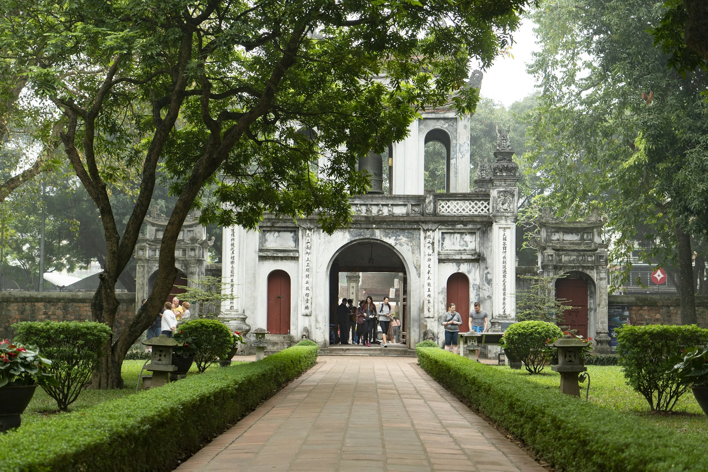
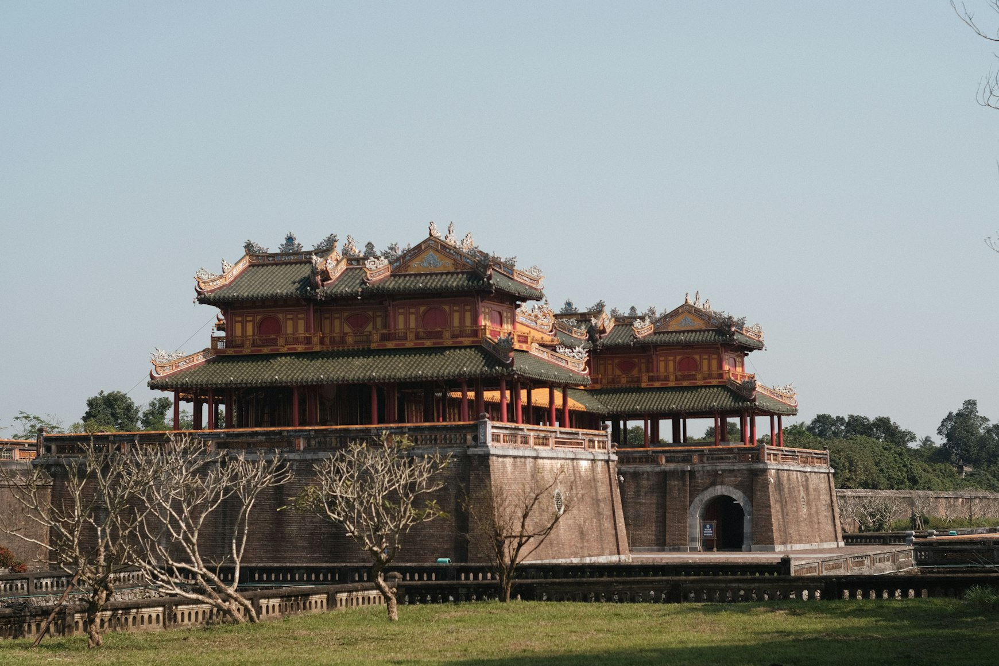
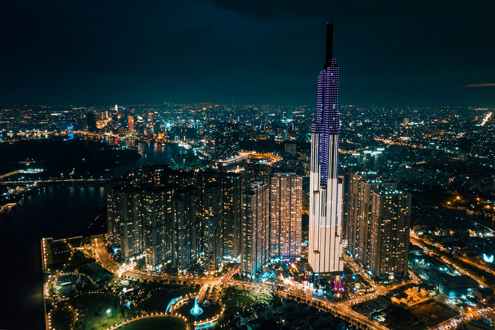
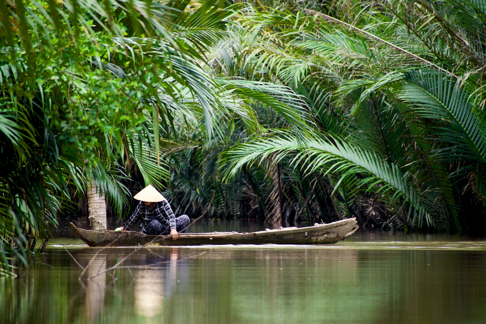

People in Vietnam argue about phở endlessly.
The north considers southern phở too sweet. The south considers northern phở too restrained, almost incomplete. And people from central Vietnam tend to dismiss both sides entirely, because their cuisine follows a different logic altogether: spicier, denser, more aggressive, sometimes almost overwhelming.
Only after traveling through the country from north to south do you begin to understand how little Vietnam resembles a single unified cuisine.
It is not only the flavor that changes.
The entire logic of eating changes with it.
In late February and early spring, the contrast becomes especially visible. The north still holds onto cool damp mornings and gray skies. Central Vietnam grows heavier with humidity and rain. The south already lives inside tropical heat, where ice, sugar, acidity, and fresh herbs stop being optional and start becoming necessary.
In Vietnam, climate can be tasted directly inside the broth.
Hanoi: A Cuisine That Distrusts Excess

Morning in Hanoi runs on soup.
By six in the morning, the sidewalks are already filled with plastic stools, metal tables, and steam rising from bowls of phở bò. Many people eat quickly before work, barely speaking. During colder months, the fat along the edges of the broth can begin thickening before the soup is even finished.
Northern phở is usually very different from the versions travelers later encounter in the south.
The broth is clearer. Sweetness is restrained. Fewer herbs appear on the table. In many places, adding too many sauces is treated almost like interfering with a finished balance.
Hanoi cuisine often revolves around restraint.
Even bún chả — one of the city’s defining dishes — relies less on intensity than on smoke, grilled pork fat, fish sauce, and the contrast between hot meat and cool noodles.
The same feeling exists inside Hanoi’s old cafés.
Egg coffee did not begin as a novelty drink. It emerged during periods when fresh milk was difficult to obtain under French colonial rule. In older cafés, it still feels less like modern coffee culture and more like part of a northern habit of sitting slowly through long gray mornings.
Even the coffee itself tends to be less sweet than in the south.
Northern Vietnam rarely tries to overwhelm flavor immediately.
Huế: The Most Complex Cuisine in the Country

If Hanoi values balance, Hue values intensity.
As the former imperial capital, Huế spent centuries developing a cuisine built around details: fermented pastes, chili oils, layered broths, small dishes, and labor-intensive preparation.
This is often where travelers first notice how aggressively central Vietnam uses shrimp paste.
Mắm ruốc — fermented shrimp paste — appears across the region in ways many foreigners find startling at first. But without it, bún bò Huế loses much of its depth.
Even the soups feel physically heavier.
Compared to northern phở, bún bò Huế contains more chili, more lemongrass, more oil, and stronger fermented flavors. During Huế’s long rainy periods, the dish feels almost perfectly adapted to the city itself.
That adaptation is not accidental.
Central Vietnam historically lived through harsher weather conditions: storms, flooding, relentless humidity, difficult agricultural cycles. The cuisine gradually became saltier, spicier, and more concentrated in response.
Even portion sizes often differ from the south.
Imperial cuisine in Huế developed around multiple smaller dishes rather than oversized plates.
Da Nang: The Point Where Vietnam Begins to Open
There is a moment somewhere between central and southern Vietnam when the country’s flavor profile begins changing again.
In Da Nang, the shift already feels obvious.
The air grows saltier from the sea. Seafood becomes more dominant. Noodles appear with thicker sauces instead of large bowls of broth. Turmeric, peanuts, fried garlic, and chili oil become more common.
Mì Quảng captures this transition well.
For many foreigners, it becomes one of Vietnam’s most unexpected noodle dishes. There is very little broth — only a concentrated layer at the bottom of the bowl beneath herbs, peanuts, rice crackers, pork, or shrimp.
This is already the cuisine of a hotter climate.
And by this point in the journey, another pattern becomes impossible to ignore: the farther south you travel, the more openly Vietnam embraces sweetness.
Saigon: A City That Prefers Abundance

In Ho Chi Minh City, many northerners begin complaining almost immediately.
“Too sweet.”
And they are not only talking about desserts.
Southern Vietnam uses more sugar, more caramelization, more palm sugar, and sweeter sauces overall. Climate explains part of this. In tropical heat, food begins functioning differently. People want more ice, more herbs, more acidity, more contrast.
That is why huge herb plates become standard in the south.
That is why cà phê sữa đá feels inseparable from ice.
That is why southern phở often arrives with bean sprouts, hoisin sauce, and additional herbs that northern restaurants might never place beside the bowl.
Saigon’s food feels faster and more physical.
People eat late into the night beside roaring motorbikes. Cơm tấm smells of caramelized pork and charcoal smoke. Hủ tiếu often tastes softer and sweeter than northern soups. Dessert culture becomes far more visible than it is in Hanoi.
By this point, it becomes clear that Vietnam is not moving from “better” cuisine to “worse” cuisine.
It is simply becoming more tropical.
The Mekong Delta: A Cuisine Built by Water

In the far south, the cuisine changes once again.
For generations, life in the Mekong Delta revolved around canals, floating markets, boats, fish, and tropical agriculture. The influence appears everywhere: coconut, fermentation, dense sweetness, river fish, palm sugar.
Some floating markets still begin before sunrise, before the humidity becomes unbearable.
This is where southern Vietnam’s tropical abundance becomes impossible to separate from the food itself. Fruits grow sweeter. Desserts become softer and heavier with coconut. Fish sauce deepens. Broths turn richer and cloudier.
Many northerners openly admit they could not eat this way every day.
And perhaps that tension reveals Vietnam’s geography of flavor better than anything else.
The country changes so gradually that the contrasts seem minor at first. But after ten days of traveling south, it becomes difficult to believe that clear northern phở, spicy bún bò Huế, and sweet southern soups all belong to the same national cuisine.
In Vietnam, food was never simply food.
It has always been a way of adapting to climate, humidity, rainfall, temperature, and the rhythm of everyday life in each region.
And that is what makes the country so fascinating to taste from north to south.